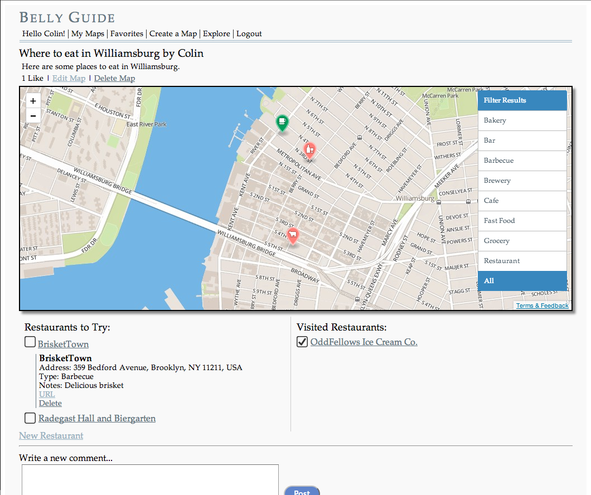

-
BellyGuide
Source
BellyGuide is a Rails and Backbone.js-based website that helps people keep track of restaurants they want to try, by organizing them in to-do lists. Features include integration with the Mapbox API, user login, and comment posting through AJAX requests.